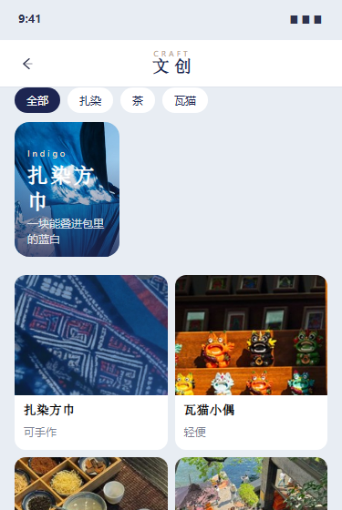

02 / CONCEPT设计主张
苍洱之间，
一匹蓝。
一匹蓝。
整个产品的视觉，就是一块扎染蓝布：深靛是布的底色，雾蓝是浸出来的水痕，宣纸白是留出的空。文化感不靠民族纹样堆砌，靠蓝白的浓淡、留白的呼吸、笔触的手感——让「逛」这件事本身像在布上行走。
扎染气质留白呼吸笔触手感符号服务功能

INDIGO · TIE-DYE
周城手作
面向 18–30 岁的短途游客与文化兴趣用户：要快、要美、要少踩坑。项目从大理文化符号（瓦猫、扎染、屋檐、茶）出发，建立可识别的蓝白视觉语言，完成「引导 → 首页 → 景点 / 文化 / 文创 → 行程 / 收藏」的完整小程序体验，并附可交互原型。
整个产品的视觉，就是一块扎染蓝布：深靛是布的底色，雾蓝是浸出来的水痕，宣纸白是留出的空。文化感不靠民族纹样堆砌，靠蓝白的浓淡、留白的呼吸、笔触的手感——让「逛」这件事本身像在布上行走。
宣纸白 / 生宣米做页面与卡片底，暖一点的米色抵消蓝色的冷，屏幕上更接近纸感。
墨蓝做正文与标题，深靛做强调与深色板块；洱海蓝只用于交互点——按钮、链接、选中态。
瓦猫朱取自屋脊陶土，仅出现在瓦猫、提醒、情绪点等极小面积上，像布上的一枚印。
瓦猫只在 Logo、空状态、加载里出现；扎染只做氛围层。装饰永远给信息让路。
每个卡片只回答一个问题：这是什么 / 要多久 / 怎么去。层级靠蓝的浓淡与字重，不靠线框堆叠。
大圆角 + 极轻投影 + 手写体点缀，模拟纸布的柔软；关键动效只做淡入与位移，克制不花。
一匹蓝布定调
「开始逛」单按钮
风起的时候
景点 / 文化 / 文创 三卡分发
六个去处 · 时长与方位
一键加入行程
在哪里遇见 · 怎么带走
收藏与加购
想去的地方 · 最近看过
行程单沉淀
首页 ├─ 景点一览 洱海 / 喜洲古镇 / 双廊 / 崇圣寺三塔 / 苍山 … ├─ 大理文化 扎染 / 瓦猫 / 三道茶 / 火塘 → 在哪里遇见（喜洲·周城·古城） ├─ 文创好物 进包（方巾）/ 掌心（瓦猫小偶）/ 坐下（小院慢坐） ├─ 云上特展 一叶舟一片浪 · 数字展厅（气质入口） └─ 旅人 想去的地方 / 浏览记录 / 行程单





用户打开小程序的前三秒，决定他是否愿意继续。首页不堆功能，先给「气质」，再给「路」。
文旅信息分散，用户不知道「先看什么、这条 App 是干嘛的」。
竖排笔触标题「风起的时候」定调；景点 / 文化 / 文创三卡分发；云上特展做气质位；「值得先看」承载效率。
3 秒读懂产品定位，2 次点击内进入核心内容；文化感与效率各得其所。

文化内容最容易做成「海报」——好看，但进不了产品。文化页的任务是让文化可浏览、可加入行程。
文化介绍容易停在氛围感，用户看完不知道去哪体验、和行程有什么关系。
「先看懂一件 · 扎染」单点深读；「在哪里遇见」横滑地点条；标签筛选（工艺/民俗/饮食）衔接景点与文创。
文化条目可一键「加入行程」，阅读动线自然过渡到「去喜洲 / 周城」的行动。

文创不是货架，是「把大理带回家」的方式。按身体动作组织商品，而不是按品类。
商品平铺像电商，与旅途叙事割裂，用户难以建立「带走什么」的心理模型。
「进包 / 掌心 / 坐下」三种携带方式做分类骨架；单品卡讲手作细节（对光能看见针脚）。
浏览即叙事：四件东西、三种位置，看完就知道哪件适合自己。
引导页与「旅人」头像处的记忆点，线条化保持克制。
等待与空白时的情绪缓冲，替代冷冰冰的转圈。
瓦猫朱色小印，用在完成、收藏等确认时刻。

蓝白浓淡即信息层级，是整套设计系统的来源。
首页与文化页的沉浸底图，低饱和处理不抢前景。
「先看懂一件 · 扎染」把工艺本身做成可深读的内容。

章节与卡片的起伏轮廓，取自屋檐的瓦当曲线。
大圆角卡片 = 屋檐的柔和转角，统一造型逻辑。
景点配图统一带檐角/院落视角，强化在地感。

文创「坐下 · 小院慢坐」与文化的民俗/饮食类目。
「三道茶」「火塘夜话」式的命名，代替功能化标题。
手作器物入镜，让商品回到使用场景。
左侧是内嵌的完整原型，也可点击下方按钮全屏进入：从「开始逛」进去，可以真实完成一条主路径——看景点、读懂扎染、把方巾放进背包、把洱海加进行程。
完成从文化符号提取 → 视觉系统 → 20+ 界面 → 可交互原型的闭环；多屏视觉一致，符号资产真实进入界面与状态流。
搜索与筛选的深度还浅；无障碍对比、深色模式未做系统检查；文案的手感可以再统一一轮。
引入真实用户测试验证首页信息优先级；补齐加载/错误/空状态的动效细节；沉淀组件库便于二次开发。